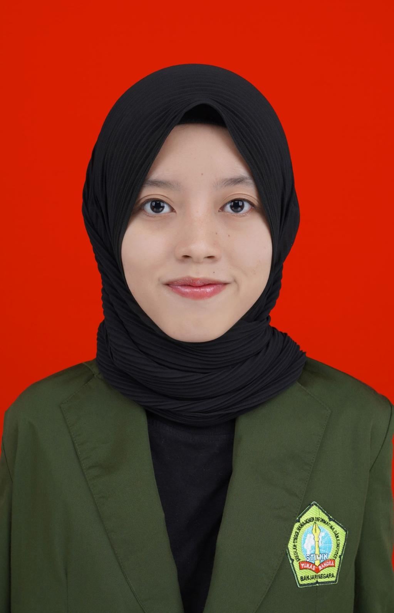

About Me

Sedikit Tentang Ku
Halo! Nama saya Abil, seorang mahasiswa Informatika yang sedang belajar dan mengembangkan diri di
dunia teknologi. Website ini saya buat sebagai wadah untuk memperkenalkan diri, menampilkan
portofolio, sekaligus berbagi cerita perjalanan saya.
Di luar dunia kuliah dan teknologi, saya suka menghabiskan waktu dengan menonton anime, membaca
komik, serta mencoba membuat pastry atau kue. Menurut saya, hobi-hobi ini membantu menjaga semangat
sekaligus menjadi pelengkap dari perjalanan belajar saya.
Pendidikan & Pelatihan
- S1 Informatika – STIMIK Tunas Bangsa Banjarnegara (2023 – sekarang)
- Fokus pada bidang pemrograman, terutama dalam pengembangan website.
- Bootcamp Perempuan Inovasi 2025 – Full Stack Web Development
- Program intensif yang mencakup pembelajaran HTML, CSS, JavaScript, dan pengembangan website portofolio hingga capstone project.
Tech Stack